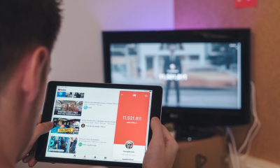

Home
About
Services
Blog
Contact
Blog
May 14, 2020
Zohid Mamadjanov • 4 min read
3 Things to Know About Search Ad Campaigns in South Korea
So, you have built your website in the Korean Language with the best local user interface practices in mind. And, your next step is to acquire quality traffic (and leads) from the most relevant target audience of your brand and ultimately grow your business in South Korea.
May 14, 2020
Zohid Mamadjanov • 4 min read
5 Powerful Features of KakaoTalk Channel
KakaoTalk is the most popular and the most used messenger application in South Korea. Monthly active users of KakaoTalk is approximately 40 million with 97% reach.
May 14, 2020
Zohid Mamadjanov • 4 min read
TOP 10 Mobile Apps & Websites in South Korea
Learn about the most used mobile apps and websites in South Korea. South Korean digital market is dynamic and competitive in the market is fierce in March, 2020.
May 14, 2020
Zohid Mamadjanov • 4 min read
Understanding Korean Millennial Parents
According to Wikipedia, Millennials, also known as Generation Y, are the demographic cohort following Generation X and preceding Generation Z.
May 14, 2020
Zohid Mamadjanov • 4 min read
All About Kakao Ads
Kakao is a Korean internet company that was founded in 2010. Kakao was established as a result of the merger between Daum Communications and Kakao.
May 14, 2020
Zohid Mamadjanov • 4 min read
All About Naver Display Ads
Naver is a South Korean portal site owned by Naver Corporation. It started as the first South Korean portal site in 1999. The portal site developed and introduced its own search engine. Naver is frequently referred to as 'the Google of South Korea.
May 14, 2020
Zohid Mamadjanov • 4 min read
All About Naver Search Ads
Naver is a South Korean portal site owned by Naver Corporation. It started as the first South Korean portal site in 1999. The portal site developed and introduced its own search engine. Naver is frequently referred to as 'the Google of South Korea.

May 14, 2020
Zohid Mamadjanov • 4 min read
9 Out of 10 Koreans Watch YouTube
YouTube is the No.1 OTT (over the top) media service in South Korea. Nasmedia, the South Korean media representatives company, has recently conducted a survey on 'Netizen Profile Research 2020'.
May 14, 2020
Zohid Mamadjanov • 4 min read
How Do Koreans Use a Mobile Phone?
According to the Pew Research Center, 95% of South Korean people use a smartphone. That is the highest smartphone penetration rate among OECD countries.
May 14, 2020
Zohid Mamadjanov • 4 min read
5 Facts About South Korean Digital Market
South Korea is one of the most digitally connected countries in the world. The East Asian nation enjoys the highest internet speed and the internet penetration rate of the country is over 95%.